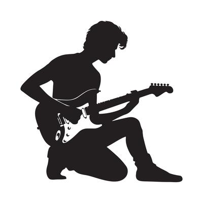

Página de Nicolás Justiniano De La Torre



En la primera imagen podemos ver un jugador de fùtbol, en específico, un arquero, en si todas las imágenes realizadas en el proyecto al menos en ésta primera página, muestran mis hobbies, cosas que me encantan hacer, entres esas esà el ser arquero de fútbol, cuando estaba en la secundaria entré a las plurinacionales representando al Colegio Santa Ana
En la segunda imagen se ve mandos de videojuegos que si bien yo juego en PC, los videojuegos es algo que me encantan, casi siempre me la paso jugando y es algo que desde pequeño me encanta, ya sean juegos de consola, de PC, o hasta de celular, pero es una manera de desestresarme o pasar el tiempo con mis amigos
Otra cosa de las que me encanta hacer es tocar instrumentos, pero en especial la guitarra, aprendí a tocar la guitarra solo, sin necesidad de entrar a cursos, fue más adelante que en la parroquia en la que pertenezco no fueron los músicos y preguntaron que quíen sabía tocar guitarra, en ese entonces un amigo de la infancia dijo que yo sabía e hizo que toque esa vez, desde ese entonces toco guitarra en mi parroquia con un pequeño grupo que tengo

El Equipo de mi vida
El equipo al cual siempre voy a apoyar en las buenas y en las malas es el club Bolivar, es por eso mismo que tambien el fondo de la página es de color celeste, siempre asisto al stadium para poder ver al equipo y hasta el punto que cuando era pandemia y salieron las sociedades del club, junto con mi primo salimos para poder hacernos socios del club .